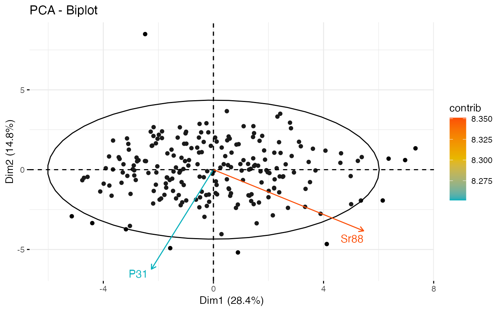

PCA(data, plot = TRUE, ...)
Arguments
| data |
A numeric or complex matrix (or data frame) that will be used to
perform the Principal Components Analysis. |
| plot |
Boolean flag to indicate whether or not to create a PCA biplot. |
| ... |
Arguments passed on to factoextra::fviz_pca_biplot
axesa numeric vector of length 2 specifying the dimensions to be
plotted. geoma text specifying the geometry to be used for the graph. Allowed
values are the combination of c("point", "arrow", "text"). Use
"point" (to show only points); "text" to show only labels;
c("point", "text") or c("arrow", "text") to show arrows and
texts. Using c("arrow", "text") is sensible only for the graph of
variables. geom.indas geom but for individuals and variables,
respectively. Default is geom.ind = c("point", "text), geom.var =
c("arrow", "text"). geom.varas geom but for individuals and variables,
respectively. Default is geom.ind = c("point", "text), geom.var =
c("arrow", "text"). habillagean optional factor variable for coloring the observations by
groups. Default value is "none". If X is a PCA object from FactoMineR
package, habillage can also specify the supplementary qualitative variable
(by its index or name) to be used for coloring individuals by groups (see
?PCA in FactoMineR). palettethe color palette to be used for coloring or filling by
groups. Allowed values include "grey" for grey color palettes; brewer
palettes e.g. "RdBu", "Blues", ...; or custom color palette e.g. c("blue",
"red"); and scientific journal palettes from ggsci R package, e.g.: "npg",
"aaas", "lancet", "jco", "ucscgb", "uchicago", "simpsons" and
"rickandmorty". Can be also a numeric vector of length(groups); in this
case a basic color palette is created using the function
palette. col.indcolor for individuals and variables, respectively. Can
be a continuous variable or a factor variable. Possible values include also
: "cos2", "contrib", "coord", "x" or "y". In this case, the colors for
individuals/variables are automatically controlled by their qualities of
representation ("cos2"), contributions ("contrib"), coordinates (x^2+y^2,
"coord"), x values ("x") or y values ("y"). To use automatic coloring (by
cos2, contrib, ....), make sure that habillage ="none". fill.indsame as col.ind and col.var but for the fill color. fill.varsame as col.ind and col.var but for the fill color. invisiblea text specifying the elements to be hidden on the plot.
Default value is "none". Allowed values are the combination of c("ind",
"ind.sup", "quali", "var", "quanti.sup"). titlethe title of the graph |
Value
Data frame with PCA result.
Examples

